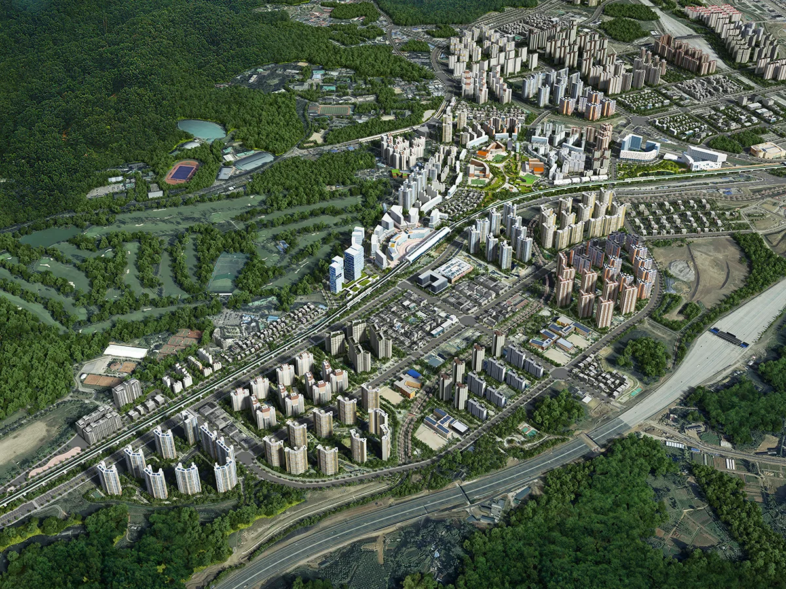
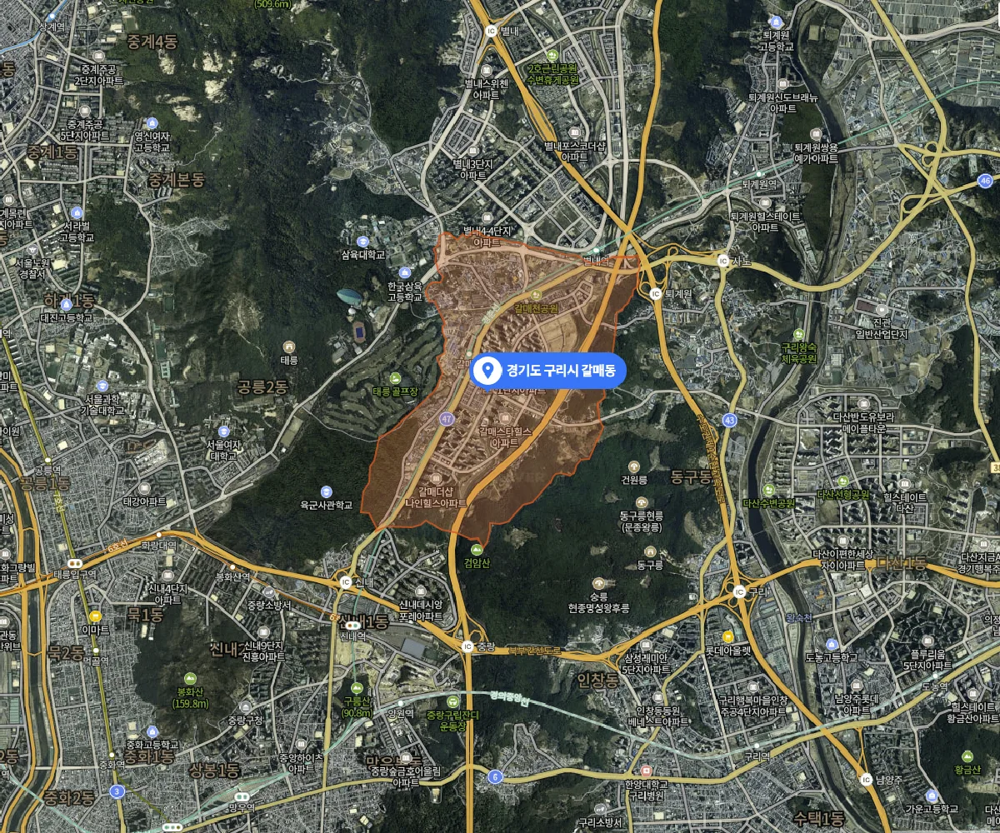
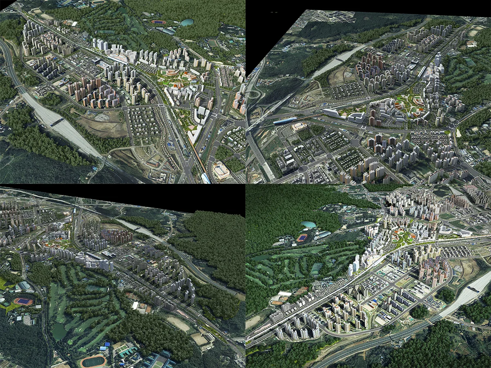
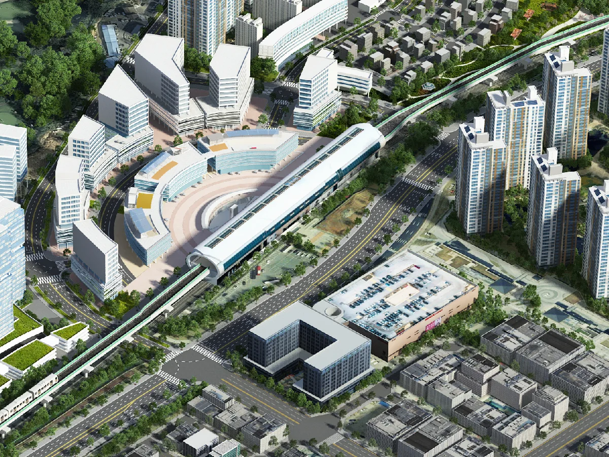
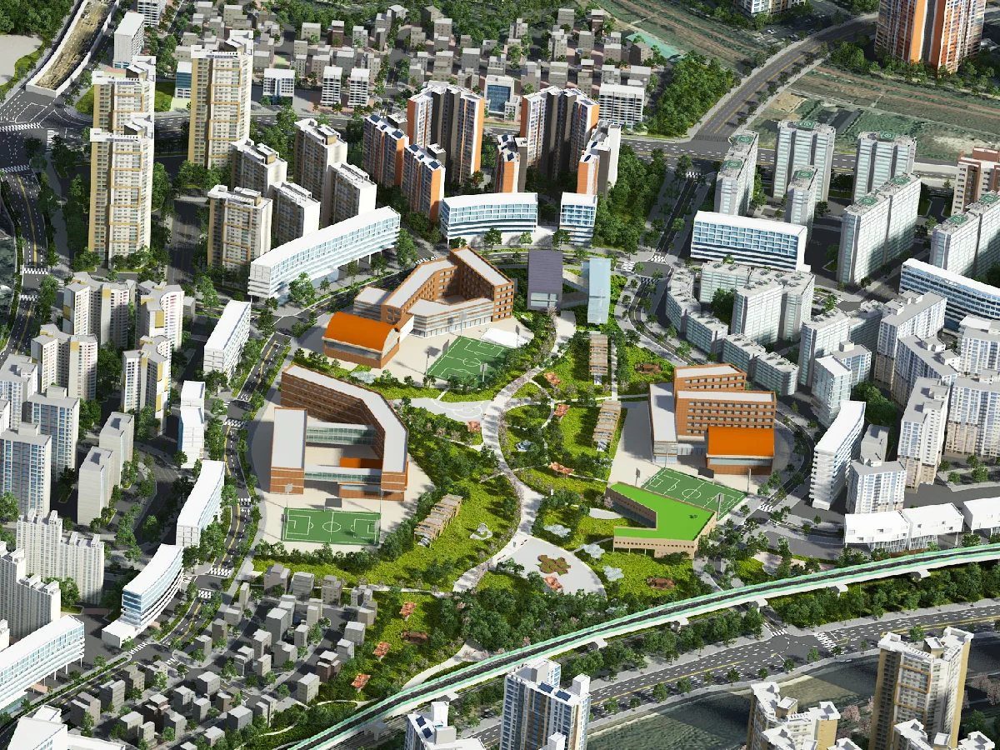

경기도 구리시 갈매동 일대의 3기 신도시 개발을 위한 광역도 및 이미지 제작 과정과 결과
물 소개입니다.

서울의 주거 포화로 인한 3기 신도시 개발의 필요성이 부각되며 경기도의 여러 지역들이 개발되게 되었는데 그 중 한 곳인 경기도 구리시 갈매동 지구입니다.

위치는 중랑IC를 넘어 태릉골프장 및 삼육대학교를 오른쪽에 둔 구리시입니다.
광역도로 표현하여야 할 대략적인 범위가 5킬로미터제곱에서 넓게는 10킬로미터제곱에 이르는 넓은 표현 범위와 사업 영역입니다.

LH 가 주도하여 진행하는 3기 신도시는 오랜 작업 기간과 다양한 수정사항 및 수준 높은 표현을 요구하여 어려움이 많았지만 최종적으로는 납품이 1차적으로는 완료 된 상태입니다.


A0사이즈 출력물 판넬에도 대응할 수 있는 해상도를 기준으로 작업하여 납품하였습니다.
감사합니다.
CONTACT
TEL : 070-4127-5640